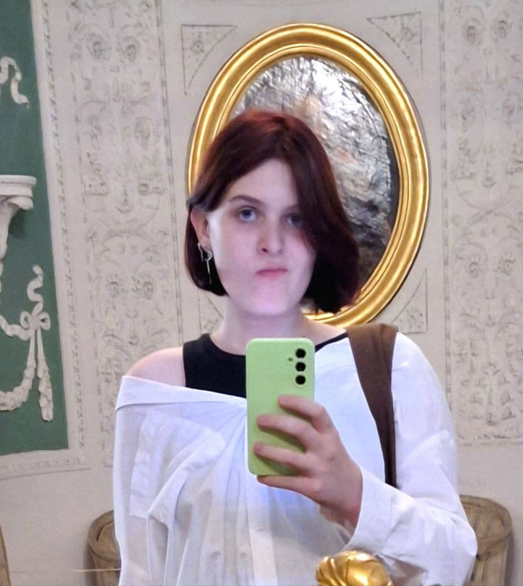
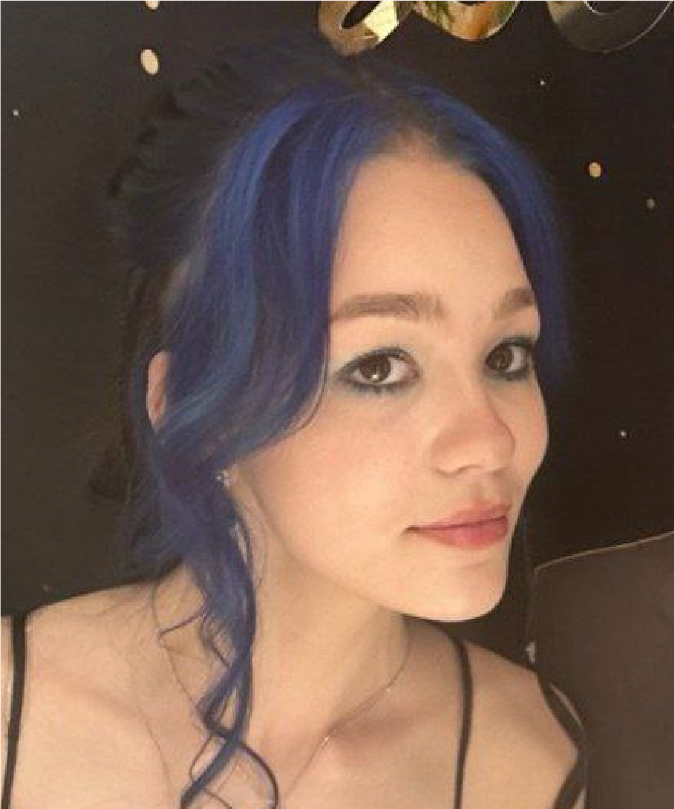

Курси на засадах класичних академій мистецтв
СУЧАСНІ АКАДЕМІЧНІ ЗНАННЯ
Ви отримаєте ґрунтовну теорію та практичні навички для вступу, створення портфоліо та розвитку кар'єри.
БЕЗКОШТОВНА КОНСУЛЬТАЦІЯВступ до Львівської національної академії мистецтв
Підготовка до творчого конкурсу
Вступ до Львівської політехніки
Образотворче мистецтво
Дизайн
Композиція
ПЕРЕВАГИ
-
Понад 500 студентів
Уже підготували портфоліо, вступили до академій мистецтв і розвиваються в креативних професіях.
-
академічна база
Ми передаємо академічну систему мислення у сучасній формі — через нові методології та цифрові інструменти. Це фундамент для впевненого старту в мистецтві та дизайні.
-
теорія, Практика та фідбек
Навчання має чітку структуру: теорія → практика → фідбек → результат.
-
супровід
Студенти отримують підтримку менторів і кураторів — від першої вправи до готового портфоліо, вступу чи професійного результату.
ВІДГУКИ
реальні історії успіху
-

July 13, 2024
Поліщук Дарія
Курс 2D композиції
В композиції я майже не мала досвіду, тому почала пробувати різні курси, але зупинилась саме на цьому. Найбільше, що мене зацікавило це те, що курс був націлений саме на вступ в ЛНАМ. В мене залишалося лише 3 місяці до іспиту, але саме завдяки чітко визначеному плану я встигла пройти всі теми. Викладач був відкритим до питань та готовий допомогти розібратися з ними. Я дуже задоволена результатом, адже склала іспит на 197 балів, тому можу щиро рекомендувати цей курс!)
БАЛ: 197
Instagram -

July 17, 2024
Цвик Вікторія
Курс 2D композиції
Задоволена курсом🥰 Здобула велику кількість знань у композиції, які не тільки допомогли мені у складанні вступного іспиту, а й допомагають при навчанні в академії. Заняття проходили у приємній атмосфері, але при цьому чітко по визначеному плану, що значно підвищує ефективність та шанси на успіх. Це я переконалась на власному досвіді, склавши іспит на 194 та вступивши в ЛНАМ. Щиро дякую!❤️
БАЛ: 194
Instagram -

July 20, 2024
Мотиль Анастасія
Курс 2D композиції
Хочу щиро подякувати за все те що ви мені подарували, а подарували ви мені великий багаж знань який обов'язково знадобиться мені у майбутньому) Дякую, мені було приємно з вами працювати ❤️
БАЛ: 191
Instagram -
July 15, 2024
Бобух Маргарита
Курс 2D композиції
Дуже дякую цьому курсу за розвиток моїх навичок та підготовку до творчого конкурсу. Результатом я задоволена, працювати з вами мені сподобалося. Було видно, що викладач добре обізнаний в цій галузі та до його порад варто прислухатися. Комунікація приємна і комфортна, а робота має чіткий план. За свої гроші курс дуже крутий. Сподіваюсь, ART OSVITA тільки ростиме та охоплюватиме нові горизонти. Дякую за все
БАЛ:
Instagram -
October 15, 2024
Рукавчук Лілія
Курс Академічного рисунку
Насправді перед записом на курс академічного рисунку, я вагалася, оскільки була далека від розуміння основ. Курс потребував зусиль, але допомогли підтримка, зворотний зв'язок та подача інформації від ментора, це було доступно навіть для початківців.
БАЛ:
instagram -

July 14, 2025
Горбуленко Ярослава
Курс 2D композиції
Насправді перед записом на курс академічного рисунку, я вагалася, оскільки була далека від розуміння основ. Курс потребував зусиль, але допомогли підтримка, зворотний зв'язок та подача інформації від ментора, це було доступно навіть для початківців.
БАЛ: 189
Instagram -

July 14, 2025
Шушман Дарина
Курс Академічного рисунку
Щодо курсу, то я дуже рада, що знайшла вас та вашу школу. Загуглила школу і захотілося спробувати понавчатися у вас. Очікування справдилися, навіть трохи більше. Думала підтягнути знання з академічного рисунку, воно так і вийшло, але ще дізналася багато нового та цікавого. Подобається структура занять та пояснення матеріалу. Навички покращилися, з 144 балів за творчий конкурс, я набрала 186. Якби було більше особистого часу на практику, впевнена вийшло б більше)! Класно, що ви знаєте які вимоги в університетах, це дуже допомогло готуватися. Дякую!
БАЛ: 186
Instagram -
July 20, 2024
Охріменко Марія
Курс 2D композиції
До початку курсу в мене не було розуміння що таке композиція та як правильно компонувати кольори. Курс мені в цьому дуже допоміг, і хоча я не отримала високі бали, але я буду використовувати надбані знання на далі в своїх власних роботах та розвиватись в сфері графічного дизайну. Тому дякую вам за це велике💖💖 А також я буду чекати на повноцінний курс по гд
БАЛ:
Instagram -

July 15, 2025
Аблова Єлизавета
Курс 2D композиції
Хотіла вступити на омріяну спеціальність. Обрала Art Osvita тому, що готували так, як вимагають умови університету. Я навіть не очікувала на такий гарний результат, це було дуже несподівано та приємно. Матеріал подається доволі цікаво, я приєдналася не в самому початку, тому мені було трохи складно надігнати курс, але все добре. Мені сподобалося те, що вчать саме у фігмі, бо це набагато швидше та можна краще натренуватися. Курс дуже покращив мій результат та сама я би так не змогла.
БАЛ: 187
Instagram -

July 16, 2025
Хвильова Марія
Курс 2D композиції
Не люблю групові курси, бо зазвичай почуваюсь десь збоку. Але тут було по іншому. Особливо цінно, коли в якийсь момент зовсім опустились руки, викладач не пройшов повз, а справді захотів розібратись. Ця підтримка і є те, що найбільше запам’яталось.
БАЛ: 179
Instagram